TextAnalysisR provides a supporting workflow tool for
text mining analysis. The web app incorporates quanteda (text
preprocessing), stm
(structural topic modeling), ggraph, and widyr (network analysis).
tidytext is implemented
to tidy non-tidy format objects. The R Shiny web app is available at
TextAnalysisR::TextAnalysisR.app() or https://textanalysisr.org.
Functions are provided for completing word-topic probabilities,
document-topic probabilities, estimated effects of covariates on topic
prevalence, and network analysis, similar to tasks available in the web
app.
These steps are similar to those demonstrated in the Shiny
web app at TextAnalysisR::TextAnalysisR.app().
Installation
The development version can be installed from GitHub:
install.packages("devtools")
devtools::install_github("mshin77/TextAnalysisR")Alternatively, Launch and Browse the Shiny App
if (interactive()) {
TextAnalysisR.app()
}Unite Text Columns
df <- TextAnalysisR::SpecialEduTech
united_tbl <- TextAnalysisR::unite_text_cols(df, listed_vars = c("title", "keyword", "abstract"))
united_tbl## # A tibble: 490 × 7
## united_texts reference_type author year title keyword abstract
## <chr> <chr> <chr> <dbl> <chr> <chr> <chr>
## 1 Dyscalculia and the minic… journal_artic… Block… 1980 Dysc… Arithm… Notes t…
## 2 The effects of computer-a… thesis Bukat… 1981 The … locus … This st…
## 3 Computer Assisted Instruc… journal_artic… Watki… 1981 Comp… Comput… Results…
## 4 Arc-Ed Curriculum: Applic… journal_artic… Chaff… 1982 Arc-… Comput… The Arc…
## 5 ARC-ED curriculum: the ap… journal_artic… Chaff… 1982 ARC-… Electr… This ar…
## 6 The Effect of the Hand-he… thesis Golde… 1982 The … NA The pur…
## 7 A review of some traditio… journal_artic… Neal,… 1982 A re… tradit… Discuss…
## 8 A study of the effectiven… thesis Engle… 1983 A st… microc… The pur…
## 9 The influence of computer… thesis Foste… 1983 The … comput… The eff…
## 10 Using Computer Software t… journal_artic… Pomme… 1983 Usin… Comput… The art…
## # ℹ 480 more rowsPreprocess Text Data
df <- TextAnalysisR::SpecialEduTech
united_tbl <- TextAnalysisR::unite_text_cols(df, listed_vars = c("title", "keyword", "abstract"))
tokens <- TextAnalysisR::preprocess_texts(united_tbl,
text_field = "united_texts",
verbose = FALSE)
tokens## Tokens consisting of 490 documents and 6 docvars.
## text1 :
## [1] "dyscalculia" "minicalculator" "alp" "program"
## [5] "arithmetic" "arithmetic" "remedial" "teaching"
## [9] "education" "learning" "disabled" "children"
## [ ... and 71 more ]
##
## text2 :
## [1] "effects" "computer" "assisted" "instruction"
## [5] "mastery" "multiplication" "facts" "learning"
## [9] "disabled" "elementary" "school" "aged"
## [ ... and 54 more ]
##
## text3 :
## [1] "computer" "assisted" "instruction" "learning" "disabled"
## [6] "students" "computer" "assisted" "instruction" "computer"
## [11] "programs" "drills"
## [ ... and 42 more ]
##
## text4 :
## [1] "arc" "ed" "curriculum" "applicability"
## [5] "severely" "handicapped" "pupils" "computer"
## [9] "assisted" "instruction" "games" "online"
## [ ... and 37 more ]
##
## text5 :
## [1] "arc" "ed" "curriculum" "application" "video"
## [6] "game" "formats" "educational" "software" "electronic"
## [11] "games" "curriculum"
## [ ... and 89 more ]
##
## text6 :
## [1] "effect" "hand" "held" "calculator" "mathematics"
## [6] "speed" "accuracy" "motivation" "secondary" "educable"
## [11] "mentally" "retarded"
## [ ... and 223 more ]
##
## [ reached max_ndoc ... 484 more documents ]Plot Word Frequency
df <- TextAnalysisR::SpecialEduTech
united_tbl <- TextAnalysisR::unite_text_cols(df, listed_vars = c("title", "keyword", "abstract"))
tokens <- TextAnalysisR::preprocess_texts(united_tbl, text_field = "united_texts")
dfm_object <- quanteda::dfm(tokens)
word_frequency_plot <- TextAnalysisR::plot_word_frequency(dfm_object, n = 20)
word_frequency_plot
Remove Common Words Across Documents
df <- TextAnalysisR::SpecialEduTech
united_tbl <- TextAnalysisR::unite_text_cols(df, listed_vars = c("title", "keyword", "abstract"))
tokens <- TextAnalysisR::preprocess_texts(united_tbl, text_field = "united_texts")
dfm_object <- quanteda::dfm(tokens)
dfm_removed <- TextAnalysisR::remove_common_words(tokens = tokens,
remove_vars = c("students", "study"),
dfm_object = dfm_object)
TextAnalysisR::plot_word_frequency(dfm_removed, n = 20)
Evaluate Optimal Number of Topics
df <- TextAnalysisR::SpecialEduTech
united_tbl <- TextAnalysisR::unite_text_cols(df, listed_vars = c("title", "keyword", "abstract"))
tokens <- TextAnalysisR::preprocess_texts(united_tbl, text_field = "united_texts")
dfm_object <- quanteda::dfm(tokens)
TextAnalysisR::evaluate_optimal_topic_number(
dfm_object = dfm_object,
topic_range = 5:30,
max.em.its = 75,
categorical_var = "reference_type",
continuous_var = "year",
height = 600,
width = 800,
verbose = FALSE)Plot Highest Word Probabilities for Each Topic
df <- TextAnalysisR::SpecialEduTech
united_tbl <- TextAnalysisR::unite_text_cols(df, listed_vars = c("title", "keyword", "abstract"))
tokens <- TextAnalysisR::preprocess_texts(united_tbl, text_field = "united_texts")
dfm_object <- quanteda::dfm(tokens)
TextAnalysisR::plot_word_probabilities(
dfm_object = dfm_object,
topic_n = 15,
max.em.its = 75,
categorical_var = "reference_type",
continuous_var = "year",
top_term_n = 10,
ncol = 3,
height = 1200,
width = 800,
verbose = FALSE)Plot Mean Topic Prevalence Across Documents
df <- TextAnalysisR::SpecialEduTech
united_tbl <- TextAnalysisR::unite_text_cols(df, listed_vars = c("title", "keyword", "abstract"))
tokens <- TextAnalysisR::preprocess_texts(united_tbl, text_field = "united_texts")
dfm_object <- quanteda::dfm(tokens)
TextAnalysisR::plot_mean_topic_prevalence(
dfm_object = dfm_object,
topic_n = 5,
max.em.its = 75,
categorical_var = "reference_type",
continuous_var = "year",
top_term_n = 10,
top_topic_n = 15,
height = 500,
width = 900,
verbose = FALSE)Analyze and Visualize Word Co-Occurrence Networks
Word Co-occurrence Network Plot
df <- TextAnalysisR::SpecialEduTech
united_tbl <- TextAnalysisR::unite_text_cols(df, listed_vars = c("title", "keyword", "abstract"))
tokens <- TextAnalysisR::preprocess_texts(united_tbl, text_field = "united_texts")
dfm_object <- quanteda::dfm(tokens)
word_co_occurrence_network_results <-
TextAnalysisR::word_co_occurrence_network(
dfm_object,
co_occur_n = 130,
top_node_n = 30,
height = 800,
width = 900)
word_co_occurrence_network_results$plotAnalyze and Visualize Word Correlation Networks
Word Correlation Network Plot
df <- TextAnalysisR::SpecialEduTech
united_tbl <- TextAnalysisR::unite_text_cols(df, listed_vars = c("title", "keyword", "abstract"))
tokens <- TextAnalysisR::preprocess_texts(united_tbl, text_field = "united_texts")
dfm_object <- quanteda::dfm(tokens)
word_correlation_network_results <-
TextAnalysisR::word_correlation_network(
dfm_object,
co_occur_n = 30,
corr_n = 0.4,
top_node_n = 40,
height = 1000,
width = 900)
word_correlation_network_results$plotAnalyze and Visualize Term Proportions by a Continuous Variable
Term Proportions by a Continuous Variable Plot
df <- TextAnalysisR::SpecialEduTech
united_tbl <- TextAnalysisR::unite_text_cols(df, listed_vars = c("title", "keyword", "abstract"))
tokens <- TextAnalysisR::preprocess_texts(united_tbl, text_field = "united_texts")
dfm_object <- quanteda::dfm(tokens)
stm_15 <- TextAnalysisR::stm_15
term_proportion_results <-
TextAnalysisR::term_proportion(
dfm_object,
stm_model = stm_15,
continuous_variable = "year",
selected_terms = c("calculator", "computer"),
height = 500,
width = 900)
term_proportion_results$plot